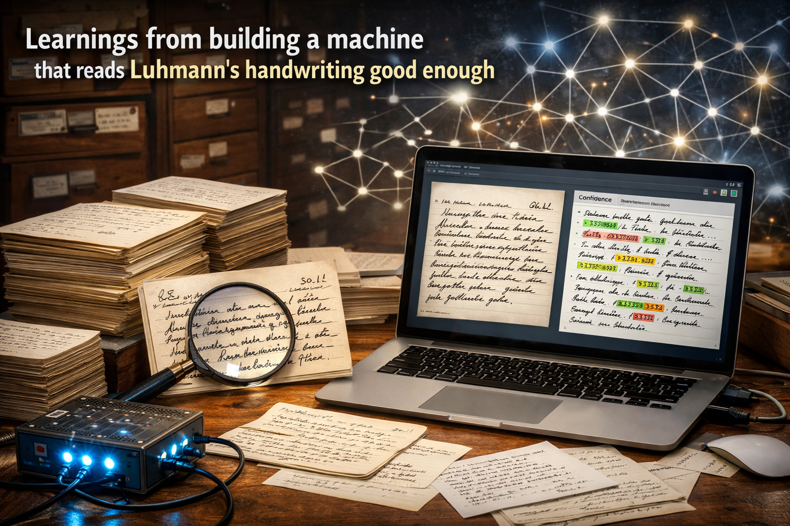

Learnings from Building a Machine That Reads Luhmann's Handwriting Good Enough
March 29, 2026 · Martijn Aslander
Niklas Luhmann left behind 90,000 handwritten index cards. For eleven years, a team of scholars at the University of Bielefeld has been transcribing them by hand — card by card, word by word, with the kind of patience and precision that defines serious academic work. They're about a third done. The project runs until 2030. At the current pace, that deadline looks ambitious.
I'm not a scientist. As the founder of Digital Fitness and the European PKM Summit, I've met more Zettelkasten enthusiasts than I can count. I've watched people buy every book on Luhmann's method, set up elaborate card systems, debate the philosophy of linking. I'm a newbie in that world. But a well-connected newbie with shiny new tools and a very deep desire to uncover things just out of curiosity.
Seth Godin wrote something I keep coming back to: the hallmark of projects that turn out to be worth doing is that they're more trouble than they're worth. The things that are obviously worth doing are probably already being done.
Transcribing 90,000 handwritten cards by hand for fifteen years: obviously worth doing, already being done. Asking whether a curious outsider with AI tools could get 80% of the way there in a single day: more trouble than it's worth. My kind of project.
The scholars asked: how do we transcribe every card correctly? That's the right question if you need a publication-grade archive. But I started wondering: what if correct isn't the only useful target? What if you approached this through abductive reasoning — not “what is the perfect answer” but “what's the most useful conclusion I can reach with the evidence I have”?
What if you don't need 100% of the cards at 100% accuracy to get 95% of the value? What if 80% accuracy across all 73,715 cards, delivered in a single day, is more useful to more researchers than 100% accuracy on 30,000 cards delivered in 2030?
And here's the thing: no archive is 100% accurate anyway. Bielefeld's manual transcriptions contain errors too — I found disagreements. The question was never perfection versus imperfection. Every transcription project trades speed for accuracy somewhere. The real question is whether researchers are better off with a searchable, confidence-scored, imperfect version of all 73,715 cards — or with nothing at all for 47,000 of them.
That reframe changes everything. So I tried it.
The problem nobody could solve
Luhmann wrote from 1951 until his death in 1998. Everything by hand, in German, in a handwriting that got harder to read as the decades passed. They're about a third done.
So I asked: what happens if you just hand a photo of a card to an AI model and say “read this”?
You get garbage. The model recognizes it's German, recognizes it's handwriting, and then confidently invents words that aren't there. Where Luhmann wrote “Innenhorizont,” the model reads “Zunehmend ordnen.” Plausible-sounding nonsense.
My starting error rate: 163%. More errors than letters on the card.
The first insight: the cards know each other
Here's the thing about Luhmann's archive that most people miss. The cards don't stand alone. They reference each other — tens of thousands of cross-references. Card 21/3d points to 52/4b, which points to 28/10f. It's a knowledge graph built by hand over 46 years.
That gave me an idea. If I know what a card's neighbors are about — because those neighbors have already been transcribed — I can give that context to the AI. It no longer has to read every word perfectly. It can reconstruct meaning from context.
I called this the ripple method. Start with the cards that have the most already-transcribed neighbors. Use those neighbors as context. Every card you transcribe becomes context for its own neighbors. The ring expands outward, like a ripple in water.
It works. Cards transcribed with neighbor context scored 2.7 percentage points better than cards transcribed without it. A skeptic might call that noise. But that's missing the deeper point.
A card isn't a standalone document. It's a node in a network. Even if a transcription is imperfect, the neighbors tell you what topic to expect, which concepts are likely, which other cards it cites. A word you can't quite read on card X but that appears on three neighboring cards is no longer a mystery — the network fills the gap. The more cards are transcribed, the smaller those gaps get.
This also means every transcription comes with a built-in confidence signal. Cards with many transcribed neighbors have more context to draw from — they're inherently more reliable than cards that sit at the edge of the network with few connections. You know which is which before you use them. That's not a 2.7 percentage point improvement. That's a map of where to trust the archive and where to verify.
The second insight: model choice matters more than anything else
I tested six AI models on the same ten cards. Five produced usable results — two failed on quota issues before completing. Same photos, same instructions, same context. The results were not what I expected:
| Model | Error rate |
|---|---|
| Claude Haiku (Anthropic) | 34.8% |
| Claude Sonnet (Anthropic) | 27.5% |
| Claude Opus (Anthropic, most expensive) | 28.4% |
| Gemini 2.5 Flash (Google) | 15.3% |
| Gemini 2.5 Pro (Google) | 14.8% |
Gemini reads handwriting almost twice as accurately as Claude. And the cheap Flash model is nearly as good as the expensive Pro model. I tried three different prompt strategies to close the gap with Claude. None of them came close.
The lesson I took from this: picking the right model matters more than any clever prompting. Don't optimize your way out of a bad model choice.
The third insight: I was measuring wrong
My early results showed 32% error rate. Disappointing. But when I looked more carefully, I found the problem: Bielefeld's reference transcriptions are full of invisible Unicode characters — hair spaces you can't see but that count as errors in the measurement. There were 250,751 of them across 70,524 cards. Once I corrected my measurement method, the real error rate was 15.6%. Nearly half what I thought.
This is the kind of thing you only find by testing thoroughly and questioning your own numbers. I would have drawn the wrong conclusions if I'd stopped at the first measurement. The willingness to recheck your own assumptions is what separates a useful result from a confident mistake.
The fourth insight: the obvious idea didn't work
Once the pipeline was working, I tried something that seemed like a sure win: instead of reading each card once, read it three times independently and let the results vote. Where all three agree, trust it. Where two agree and one differs, take the majority. The logic was simple: hallucinations are random, so consensus should filter them out.
It didn't work. Across 100 test cards, triple voting scored 17.0% CER versus 16.3% for single reads. Worse, not better. On 66% of cards the triple read was less accurate than a single read. Only 19% improved.
The likely explanation: when the model misreads a word, it tends to misread it the same way each time — the errors aren't random, they're systematic. Voting amplifies systematic errors rather than filtering them. The agreement score was 89.9% — the three readings mostly agree, but they agree on the wrong answer.
This is worth reporting because the instinct to "just read it three times" is strong. I had to test it to let it go. Single reads with confidence scoring based on network context turned out to be more reliable than consensus voting. The context is smarter than the repetition.
I also tested how many parallel workers to run. The sweet spot turned out to be 20 — beyond that, Google's servers start to slow down rather than speed up. At 20 parallel workers, the full archive runs in roughly 46 hours for a single pass.
What I ended up with
A tested, reliable pipeline that:
- Processes all 73,715 cards from scans of Luhmann's handwriting
- Achieves 15.6% average character error rate across 200 tested cards
- Delivers 71% of cards under 20% error — usable for research
- Has zero total failures, thanks to automatic retries
- Runs in roughly 46 hours at 20 parallel workers
- Costs nothing if you already have an API subscription — around $221 if you don't
To put the error rate in plain terms: of every 100 characters, roughly 84-85 are correct. On a card of 200 characters, that's about 30 wrong letters. Enough to understand the meaning and search the text. Not enough for scientific publication.
A cognitive aid for the transcribing experts
Reading Luhmann's handwriting cold — picking up a card you've never seen and deciphering it from scratch — is genuinely hard. Even experienced transcribers have to work at it. But the human brain is much faster at recognizing and confirming than at retrieving from nothing. If the AI already suggests “this word is probably Innenhorizont,” the expert just needs to check whether that's right. That's a multiple choice question instead of an open one. Same expertise required, but ten times faster. The better my pipeline gets — and it gets better with every card transcribed — the more useful that suggestion becomes.
For Luhmann researchers: every scholar working with the archive will soon have access to a searchable version of all 73,715 cards. Not perfect, but usable. That changes what's possible.
For error detection: by comparing my transcriptions to Bielefeld's, I can flag cards where we disagree in places where my error rate is low. Sometimes I'm wrong. Sometimes they're wrong. Either way, it gives experts a targeted checklist instead of 90,000 cards to recheck.
For anyone working with archives: the method — using the document network as reading aid, choosing the right model by measuring, expanding outward from what's already known — works for any archive where documents reference each other. Medieval manuscripts, personal correspondence, historical collections.
For the cost argument: an eleven-year project, supplemented by a single day of work and one night of compute. Not replaced. Supplemented. The experts do the precise work. The machine does the broad work. Together you go faster.
A fair objection: what about your time? The first working version took two hours. The benchmarking ran overnight while I slept — on a Mac Mini, not on my time. Yes, I iterated. But the iteration was curiosity, not labor. I wasn't billing anyone. My own API costs were covered by an existing subscription — zero out of pocket. If you're starting from scratch, the estimated API cost is around $221. Either way, with all my mistakes already made for you, that's what it costs you to run this tomorrow.
The thing people kept saying was that you couldn't use AI on Luhmann's handwriting. Too messy, too idiosyncratic, too hard. They were right that you can't just ask a model to read a card. They were wrong that there was no way in. The way in was the network he spent 46 years building.
This took me a single day. If it saves someone else a year, that's worth a blog post.